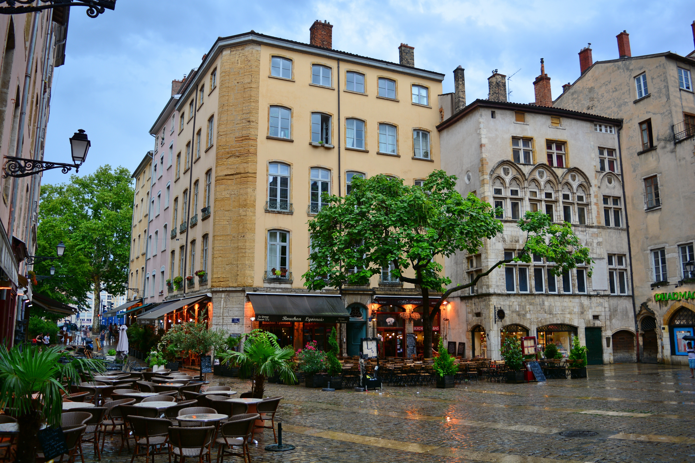

Die Confluence
Wo Rhône und Saône sich treffen, beginnt Lyon. Die Geografie bestimmte von Anfang an Handel, Bewegung und Stadtraum.

Stadt Lyon | Offizielle Broschüre
Eine Stadt zwischen Flüssen, Geschichte und Zukunft. Diese Broschüre zeigt die zentralen Linien von Identität, Kultur und urbanem Leben.
Kapitel 1
Wo Rhône und Saône sich treffen, beginnt Lyon. Die Geografie bestimmte von Anfang an Handel, Bewegung und Stadtraum.
Römische Infrastruktur, Renaissance-Druckkultur und das industrielle Erbe der Canuts formen bis heute den urbanen Charakter.
Vor der Stadt
Confluence als Ursprung der Stadtentwicklung.
43 v. Chr.
Lugdunum wird Hauptstadt Galliens.
15.–16. Jh.
Renaissance, Handel und Buchdruck.
18.–19. Jh.
Canuts prägen soziale und kulturelle Dynamik.
Heute
Architektur, Wissenschaft und Kultur wachsen zusammen.
Zwei Flüsse. Zweitausend Jahre.
Histoire & Identité
Kapitel 2
Lyon setzt auf kurze Wege, öffentliche Räume am Wasser und eine lebendige Nachbarschaftskultur. Kulturangebote, historische Substanz und moderne Quartiere greifen räumlich ineinander.
Das Programm der Stadt.
Culture & Événements
Kapitel 3
Place de la Comédie
69001 Lyon, France
Die Stadtverwaltung unterstützt Bürgerinnen und Bürger, Vereine, Kulturträger und Gäste mit zentralen Service- und Informationsangeboten.

Lyon, Frankreich
Im Zusammenfluss entsteht Identität.